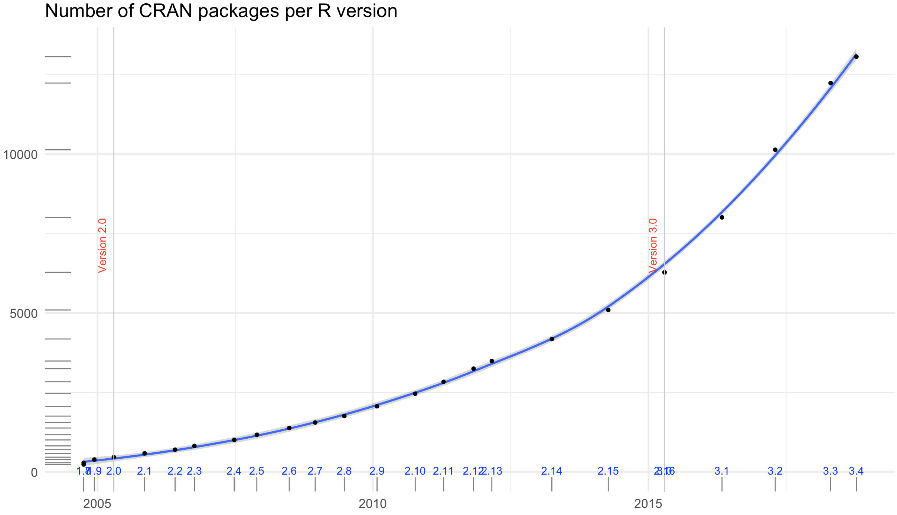
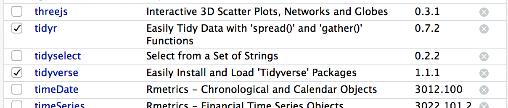
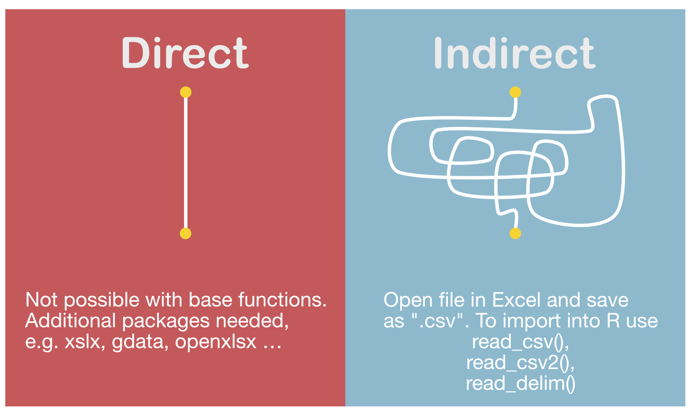
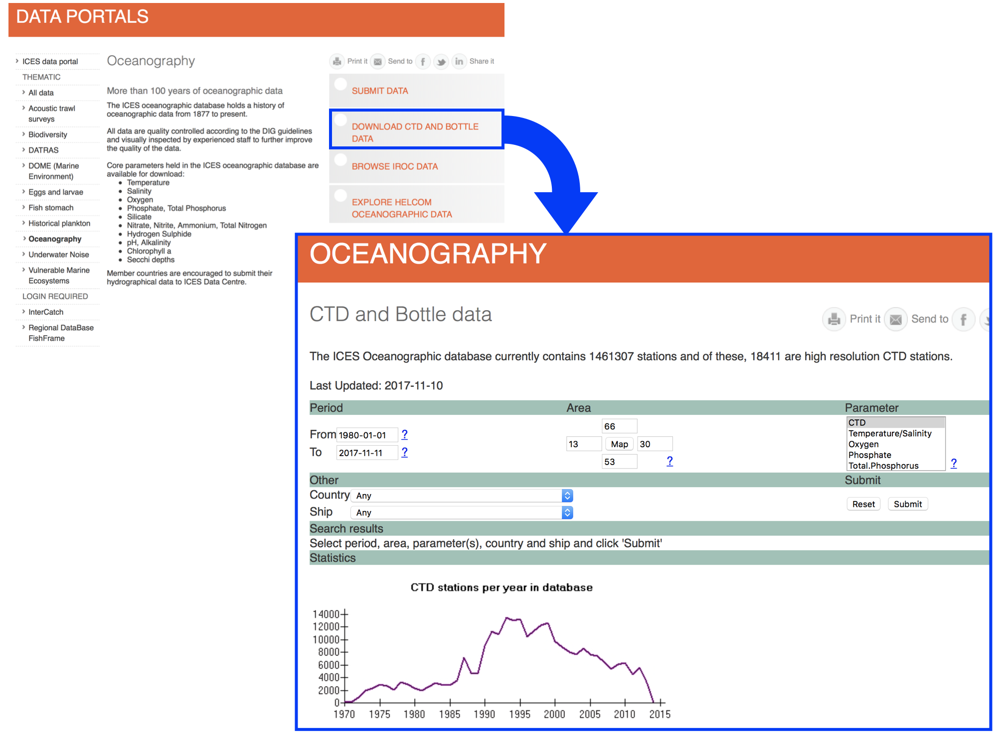
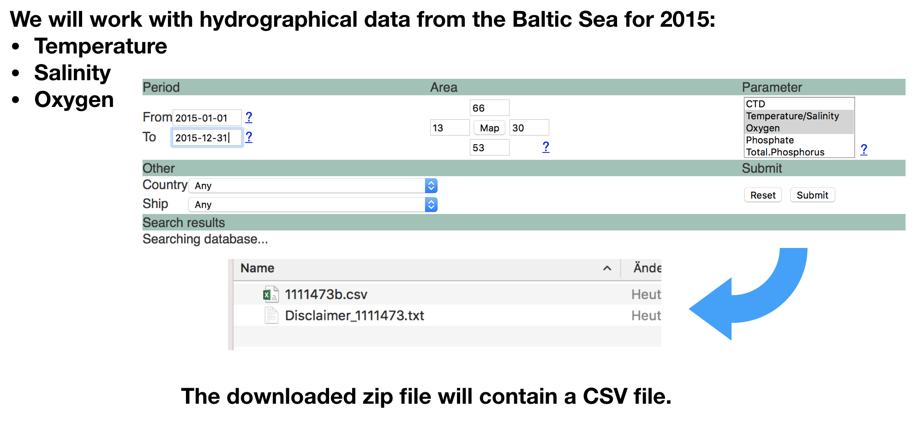

Data Analysis with R
5 - Data wrangling - 1.Import
Saskia A. Otto
Postdoctoral Researcher
Data wrangling with tidyverse

Data wrangling is
- a concept introduced by Hadley Wickam
- the art of getting your data into R in a useful form for visualisation and modelling
- composed of three main parts:
Data wrangling is
- a concept introduced by Hadley Wickam
- the art of getting your data into R in a useful form for visualisation and modelling
- composed of three main parts:

source of flowchart: R for Data Science by Wickam & Grolemund, 2017 (licensed under CC-BY-NC-ND 3.0 US)
Tidy (uni)verse
Is a collection of R packages that share common philosophies and are designed to work together:

Tidy (uni)verse
You will get to know during the course
- readr: reads rectangular data (like 'csv', 'tsv', and 'fwf') into R
- tibble: modern re-imagining of data frames
- tidy: re-arranges data to make it "tidy"
- dplyr: provides functions for data manipulation
- stringr: provides wrapper functions for common string operations
- lubridate: handles dates/times
- ggplot2: a plotting system for R, based on the grammar of graphics
- purrr: functional programming toolkit
- modelr: wraps around base R’s modelling functions to make them work naturally in a pipe
Why tidyverse?
- Consistency
- e.g. all stringr functions take a string as first argument
- e.g. most functions take a data frame as first argument (piping)
- Tidy data imposes good practices
- Synergies between different packages/tools
- Implements simple solutions to common problems
- Smarter default settings
- e.g.
utils::write.csv(row.names = FALSE),readr::write_csv()
- e.g.
- Runs fast (most functions implemented with Rcpp)
- More and more packages implement the tidyverse concept
The easiest way to get these packages is to install the whole tidyverse:
install.packages("tidyverse")
But wait ... a little detour on packages
Packages
- are written by the R community
- are a collection of
- reusable R functions,
- the documentation that describes how to use them,
- and often sample data
- the official CRAN package repository features 11782 (!) available packages at the moment (Nov 11, 2017)
Exponential increase

The chart was created using this code from Andrie de Vries (on Oct 12th, 2018).
Key packages and dependencies

Package installations (ONCE)
The 'approved' versions can be downloaded from CRAN using the function
install.packages("package_name")
or via R Studio:

Package loading (EVERY SESSION)
You load a package using the functions library() or require(). R checks whether this package has been installed and if it doesn’t exist, you’ll get an error message. The main difference between both functions is what happens if a package is not found. For consistency, simply stick to one function:
library(any_package) # library("any_package") would also work
## Error in library(any_package): there is no package called 'any_package'
require(any_package) # require("any_package")
## Loading required package: any_package
## Warning in library(package, lib.loc = lib.loc, character.only = TRUE,
## logical.return = TRUE, : there is no package called 'any_package'
Package loading (cont)
If you load a specific package you add it to the search paths:

modified from Advanced R by H. Wickam, 2014
- To call a function, R first has to find it. R does this by first looking in the global environment.
- If R doesn’t find it there, it looks in the search path, the list of all the packages you have attached.
- If packages have functions with the same name, R uses the function from the package, which was loaded last.
Package loading (cont)
You can see the search path and package list by running search().
search()
## [1] ".GlobalEnv" "package:forcats" "package:stringr"
## [4] "package:dplyr" "package:purrr" "package:readr"
## [7] "package:tidyr" "package:tibble" "package:ggplot2"
## [10] "package:tidyverse" "tools:rstudio" "package:stats"
## [13] "package:graphics" "package:grDevices" "package:utils"
## [16] "package:datasets" "package:methods" "Autoloads"
## [19] "package:base"
After loading
library(tidyverse)
you see that 8 additional tidyverse core packages are loaded.
You also see a conflict of function names (filter() and lag() exist in 2 packages)!
Lets look at the search path again:
search()
## [1] ".GlobalEnv" "package:forcats" "package:stringr"
## [4] "package:dplyr" "package:purrr" "package:readr"
## [7] "package:tidyr" "package:tibble" "package:ggplot2"
## [10] "package:tidyverse" "tools:rstudio" "package:stats"
## [13] "package:graphics" "package:grDevices" "package:utils"
## [16] "package:datasets" "package:methods" "Autoloads"
## [19] "package:base"
You now see the 9 packages added to the search path (right after the global environment).
Your turn...
Quiz 1: Function conflicts
From which packages will R use the functions filter() and lag()?
- dplyr
- stats
dplyr has been loaded after stats (which R automatically loads in every session) so dplyr comes before stats in the search path (position 2 vs 10). After R didn't find the functions filter() and lag() in the global environment it will look next in dplyr. As R is successfull finding the functions here, it will not continue searching elsewhere.
How to unload packages?
You remove a package from the search path using the function
detach(packagename)
or by unchecking the box next to the package name in the 'Packages' pane.

Information on packages
- If you run
?packagename(e.g.?tidyverse) you get some more information of what the package does and sometimes lists of functions available in this package or weblinks for further information. - More recent packages have also so-called "vignettes", which provide even more informations than the help documentation. You can read the vignette by calling
vignette("packagename"). - Sometimes, a package provides several vignettes. To get an overview call the function
browseVignettes("packagename").
vignette("dplyr")
browseVignettes("dplyr")
Your turn...
Explore some of the tidyverse packages (not 'tidyverse' itself) or any other one installed.
- Load and unload 3 packages of your choice.
- Look into the help documentation and vignettes of these 3 packages.
- What are they for?
- Who is the author?
- Identify at least 3 functions that each of the 3 packages provides.
Back to data wrangling: 1. Import

Data sources
- Excel files (.xls / .xlsx)
- Comma seperated values (.csv) --> most common files
- Text files (.txt)
- NetCDF (Network Common Data Form)
- Relational data bases (MySQL, PostgreSQL, etc.)
- URLs
- and many more ...
Mostly you will have flat files (with no internal hierarchy and interrelationships as in databases) to load into R.
Importing data from Excel

Import functions in 'readr'
- Most of readr’s functions are concerned with turning flat files into data frames:
read_delim(): reads in files with any delimiter.read_csv(): comma delimited files (.csv)read_csv2(): semicolon separated files (.csv) - common when comma used as decimal markread_tsv(): tab delimited files (.txt files)- and others:
read_table(),read_fwf(),read_log()
- All these functions have a similar or the same syntax:

Some demonstrations of read_csv using inline csv files
Inline csv files are useful for experimenting and for creating reproducible examples:
read_csv("a,b,c
1,2,3
4,5,6")
## # A tibble: 2 x 3
## a b c
## <int> <int> <int>
## 1 1 2 3
## 2 4 5 6
Tweaking your import - skipping lines
You can skip the first n lines of metadata at the top of the file using skip = n:
read_csv("The first line of metadata
The second line of metadata
x,y,z
1,2,3", skip = 2)
## # A tibble: 1 x 3
## x y z
## <int> <int> <int>
## 1 1 2 3
Or use comment = "#" to drop all lines that start with (e.g.) #.
read_csv("# A comment to skip
x,y,z
1,2,3", comment = "#")
## # A tibble: 1 x 3
## x y z
## <int> <int> <int>
## 1 1 2 3
Tweaking your import - column names
If you don't have column names set col_names = FALSE; R labels them sequentially from X1 to Xn:
read_csv("1,2,3
4,5,6", col_names = FALSE)
## # A tibble: 2 x 3
## X1 X2 X3
## <int> <int> <int>
## 1 1 2 3
## 2 4 5 6
You can also pass a character vector to col_names:
read_csv("1,2,3
4,5,6", col_names = c("x", "y", "z"))
## # A tibble: 2 x 3
## x y z
## <int> <int> <int>
## 1 1 2 3
## 2 4 5 6
Tweaking your import - Specify column types
readr functions guess the type of each column and convert types when appropriate (but will NOT convert strings to factors automatically). If you want to specify other types use a col_function in the col_types argument to guide parsing.
read_csv("your_file.csv", col_types = cols(
a = col_integer(),
b = col_character(),
c = col_logical() )
)
Tweaking your import - NAs
The argument na specifies the value (or values) that are used to represent missing values in your file (-999 or -9999 is a typical place holder for missing values).
read_csv("a,b,c
1,2,.", na = ".")
## # A tibble: 1 x 3
## a b c
## <int> <int> <chr>
## 1 1 2 <NA>
read_csv("a,b,c
1,-9999,2", na = "-9999")
## # A tibble: 1 x 3
## a b c
## <int> <chr> <int>
## 1 1 <NA> 2
So what are these tibbles?
- The 'tibble' package provides a 'tbl_df' class (the 'tibble') that provides stricter checking and better formatting than the traditional data frame.
- Major differences to a data frame:
- never changes the type of the inputs (e.g. it never converts strings to factors!)
- never creates row names
- never changes the names of variables
- non-syntactic column names possible (e.g. names can contain unusual characters like a space) --> BUT DONT GO THAT ROAD!
- tibbles generate a warning if the column you are trying to access does not exist
- printing and subsetting differs
So what are these tibbles? (cont)
- Functions for data frames will work also for tibbles.
- All tidyverse packages generate tibbles automatically
- To learn more check
vignette("tibble").
Creating tibbles
- Automatically created when importing data with readr
- Convert an existing data frame with
tibble::as_tibble(your_dataframe)(NOTE: tidyverse uses underscores, not points)
Creating tibbles
- Automatically created when importing data with readr
- Convert an existing data frame with
tibble::as_tibble(your_dataframe)(NOTE: tidyverse uses underscores, not points)
iris_tbl <- as_tibble(iris)
# Compare the difference:
class(iris)
## [1] "data.frame"
class(iris_tbl)
## [1] "tbl_df" "tbl" "data.frame"
As you see, iris_tbl inherits still the data.frame class, but has in addition also the tbl_df class.
Creating tibbles (cont)
- Or you can create a new tibble from individual vectors with
tibble()
tibble(x = 1:5, y = 1, z = x ^ 2 + y)
## # A tibble: 5 x 3
## x y z
## <int> <dbl> <dbl>
## 1 1 1 2
## 2 2 1 5
## 3 3 1 10
## 4 4 1 17
## 5 5 1 26
Inputs of shorter length are automatically recycled!
Printing tibble
- each column reports its type
- only the first 10 rows and all columns that fit on screen are shown --> much easier to work with large data
- if you want to change the number of rows (n) and columns (width) use
print()and change the arguments:
Printing tibble
- each column reports its type
- only the first 10 rows and all columns that fit on screen are shown --> much easier to work with large data
- if you want to change the number of rows (n) and columns (width) use
print()and change the arguments:
print(iris_tbl, n = 2, width = Inf) # = Inf shows all columns
## # A tibble: 150 x 5
## Sepal.Length Sepal.Width Petal.Length Petal.Width Species
## <dbl> <dbl> <dbl> <dbl> <fct>
## 1 5.1 3.5 1.4 0.2 setosa
## 2 4.9 3 1.4 0.2 setosa
## # ... with 148 more rows
Overview of more functions:

Cheat sheet is freely available at https://www.rstudio.com/resources/cheatsheets/
Your turn...
Quiz 2: Import functions
What function would you use to read a file where fields are separated with "|"?
- read_delim()
- read_csv()
- read_csv2()
- read_tsv()
- read_table()
- read_fwf()
You should find a solution without a hint. But look in the help documentation and play around with one of the previous inline csv file examples.
read_delim() has the extra argument delim where you can specify the character used to seperate fields.
Quiz 3: Import functions
What function would you use if you generated a CSV file on your own computer?
- read_delim()
- read_csv()
- read_csv2()
- read_tsv()
- read_table()
- read_fwf()
Check which symbol your computer uses as decimal mark (you can see that in Excel).
Computers in Germany typically use a comma as decimal mark, hence, when you generate a CSV file in Excel a semicolon will automatically be used as delimitor. In that case you should use read_csv2().
Quiz 4: Import functions
What arguments do read_delim() and read_csv() have NOT in common?
- progress
- quote
- trim_ws
- delim
- escape_backslash
- guess_max
- escape_double
Quiz 5: Import functions
Identify what is wrong with each of the following inline CSV files. What happens when you run the code? (You'll find the solutions at the end of the presentation.)
read_csv("a,b
1,2,3
4,5,6")
read_csv("a,b,c
1,2
1,2,3,4")
read_csv("a,b
1,2
a,b")
read_csv("a;b
1;3")
Quiz 6: Tibble vs data frame
Compare and contrast the following operations on a data.frame and equivalent tibble.
df <- data.frame(abc = 1, xyz = "a")
df$x
df[, "xyz"]
df[, c("abc", "xyz")]
What is different? Why might the default data frame behaviours cause you frustration?
Other types of data
If you have other types of files to import try one of the following packages:
- haven - SPSS, Stata, and SAS files
- readxl - Excel files (.xls and .xlsx)
- DBI - databases
- jsonlite - json
- xml2 - XML
- httr - Web APIs
- rvest - HTML (Web Scraping)
Roadmap

Some real example to import



Lets import the data following the roadmap
1.Step: Open the file in the editor to check the content
- Go to the 'Files' pane.
- Find the file "1111473b.csv" in the folder 'Data_Analysis_with_R/data' .
- Click on the file and choose "View file", which opens the file in the 'Source' pane.
- Lets check

Lets import the data following the roadmap
2.Step: Read the data into R
- Make sure before that you've set the working directory correct.
- The wrong working directory is the most common reason for error messages!
hydro <- read_csv("data/1111473b.csv")
## Parsed with column specification:
## cols(
## Cruise = col_character(),
## Station = col_character(),
## Type = col_character(),
## `yyyy-mm-ddThh:mm` = col_datetime(format = ""),
## `Latitude [degrees_north]` = col_double(),
## `Longitude [degrees_east]` = col_double(),
## `Bot. Depth [m]` = col_character(),
## `PRES [db]` = col_double(),
## `TEMP [deg C]` = col_double(),
## `PSAL [psu]` = col_double(),
## `DOXY [ml/l]` = col_double()
## )
Lets check the data
print(hydro, n = 5)
## # A tibble: 30,012 x 11
## Cruise Station Type `yyyy-mm-ddThh:mm` `Latitude [degr…
## <chr> <chr> <chr> <dttm> <dbl>
## 1 ???? 0247 B 2015-02-17 09:54:00 55
## 2 ???? 0247 B 2015-02-17 09:54:00 55
## 3 ???? 0247 B 2015-02-17 09:54:00 55
## 4 ???? 0247 B 2015-02-17 09:54:00 55
## 5 ???? 0247 B 2015-02-17 09:54:00 55
## # ... with 3.001e+04 more rows, and 6 more variables: `Longitude
## # [degrees_east]` <dbl>, `Bot. Depth [m]` <chr>, `PRES [db]` <dbl>,
## # `TEMP [deg C]` <dbl>, `PSAL [psu]` <dbl>, `DOXY [ml/l]` <dbl>
Change column names
To make subsetting and data manipulation easier change the column names, e.g.
names(hydro) <- c("cruise", "station", "type", "date_time",
"lat", "long", "depth", "pres", "temp", "psal", "doxy")
Your turn...
Checking tasks:
- Read the file into your workspace.
- Check the dimensions of the tibble
hydro. Do they match with what you've seen in the Editor? - What happened with the empty elements in, e.g., row 127-136?
- Do you agree with the data types of each column?
Quiz 7: Test your R knowledge
Subset the data to get only observations of Station "0613" and
- calculate the mean salinity (psal) and
- mean oxygen concentration (doxy)
- Calculate the mean temperature ('temp') for the surface layer (1-10 m depth = 'pres' 1-10), averaged across all stations and cruises for the entire year.
Hints for question 3: You want ALL press values to be >=1 and <= 10 (not only integer values that are = 1,2,3, ect!) and you have NAs in the temperature variable, which the default setting of the mean() function cannot handle --> check the help to see whether you can change some arguments!
Explanation
1. and 2: Either you subset first and then calculate the means:
hydro_sub1 <- hydro[hydro$station == "0613", ] and mean(hydro_sub1$psal) and
mean(hydro_sub1$doxy)
or you do both in one step:
mean(hydro$psal[hydro$station == "0613"]) and
mean(hydro$doxy[hydro$station == "0613"])
3.Subset first the range:
hydro_sub2 <- hydro[hydro$pres >= 1 & hydro$pres <= 10, ]
DON'T use: hydro_sub2 <- hydro[hydro$pres %in% 1:10, ]
as this would filter only integers, exluding pres values such as 4.5!
Now handle the NAs, either directly in the mean() function using the na.rmargument:
mean(hydro_sub2$temp, na.rm=T)
or by excluding all NAs manually: mean(hydro_sub2$temp[!is.na(hydro_sub2$temp)])
- 12.0872
- 0.322
- 10.1590412
Saving and exporting data
Saving your data as R objects
You can save your tibble or data frame as an .R object and load it later with save(your_tibble, "filename") and load("filename"):
save(your_subset, file = "My_first_object.R")
# Lets remove your subset and see what happens when we load it again
rm(your_subset)
your_subset
load(file = "My_first_object.R")
your_subset # now it should be back again
Exporting your data
- If you want to export your data for other programs, its best if you stick to the same format as you import, e.g. CSV files.
- Most import functions in 'readr' have a corresponding export function:
read_delim()-->write_delim()read_csv()-->write_csv()read_tsv()-->write_tsv()- other functions:
write_excel_csv()
Your turn...
Task: Saving and Exporting
With the subsets you created (or any other tibble/data frame in your workspace):
- save one as an R object and
- one as CSV file
Overview of functions you learned today
install.packages(), library(), require(), search(), detach(), vignette(), browseVignettes(),
read_delim(), read_csv(), read_csv2(), read_tsv(), read_table(), read_fwf(), read_log(),
tibble(), as_tibble(), print(), save(), load(),
write_delim(), write_csv(), write_tsv(), write_excel_csv()
How do you feel now.....?
Totally confused?

Go thorougly through the tasks and quizzes. Read the chapter 10 Tibbles and 11 Data import in 'R for Data Science'.
Totally bored?
Then try out to import, explore and export other datasets you have (from Excel).
Totally content?
Then go grab a coffee, lean back and enjoy the rest of the day...!

Thank You
For more information contact me: saskia.otto@uni-hamburg.de
http://www.researchgate.net/profile/Saskia_Otto
http://www.github.com/saskiaotto

This work is licensed under a
Creative Commons Attribution-ShareAlike 4.0 International License except for the
borrowed and mentioned with proper source: statements.
Image on title and end slide: Section of an infrared satallite image showing the Larsen C
ice shelf on the Antarctic
Peninsula - USGS/NASA Landsat:
A Crack of Light in the Polar Dark, Landsat 8 - TIRS, June 17, 2017
(under CC0 license)
Solutions
Quiz 5: Import functions
Example: The header has 1 element (=column) less than the data --> R skips the 3rd element of each data row then completely (3 and 6 are not shown anymore).
Example: The 1st data row has 1 element less than the header and the 2nd data row --> R automatically fills the missing element with a NA.
Example: The data rows have mixed data types --> R coerces all values to the more general character data type .
Example: Remember, the function
read_csv()expects a comma as delimiter, NOT a semicolon --> R reads it then as 1 element per row. Try alternatively:
read_csv2("a;b
1;3")
Quiz 6: Tibble vs. data frame
For tibbles the complete column name is needed. This can be useful in case "x" doesn't exist but 2 other columns that contain the letter x in their names. If you subset tibbles like a matrix ([row, col]) you will always get a tibble returned and no vectors (as data frames do in the 2nd example).
df_tbl <- as_tibble(df)
df_tbl$x
## Warning: Unknown or uninitialised column: 'x'.
## NULL
df_tbl[, "xyz"]
## # A tibble: 1 x 1
## xyz
## <fct>
## 1 a
df_tbl[, c("abc", "xyz")]
## # A tibble: 1 x 2
## abc xyz
## <dbl> <fct>
## 1 1 a